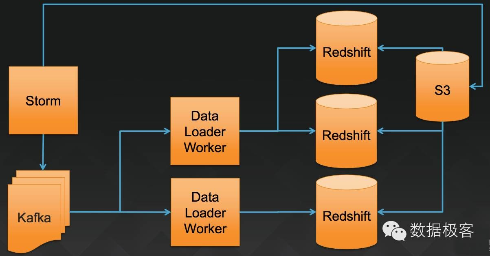
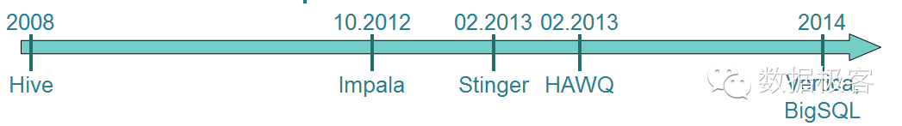
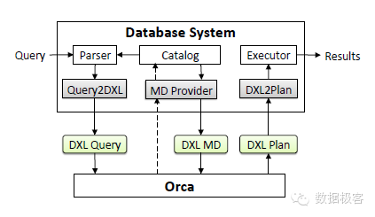
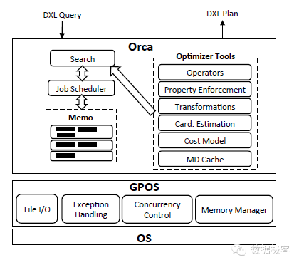
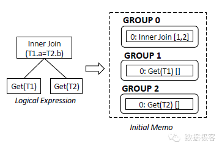
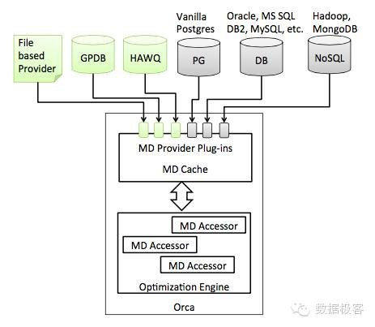

构建统一数据分析服务
对于OLAP的话题本号曾经谈论过不少次，期间也有一些观点有失偏颇，例如对基于Brute Force扫描方案的否定态度，包含Impala，Stinger/Tez，Presto等诸多手段。站在一个新的高度来看待OLAP，暴力扫描并不一定总是慢，而基于索引的方案也并不一定就真得快，因为一个大型的数据仓库，面临PB级的数据分析，数据加载速度是重要的评测指标，基于索引的方案，单纯索引本身所占据的体积就已经达到原始数据同等规模，因此并不代表在任何情况下都会更快。从另一方面来说，基于Brute Force的方案，也可以通过设计优良的查询优化器来大力提升性能，从而变Brute Force为Linear Scan，在很多情况下的确可以表现良好。正如Impala，Presto，Stringer/Tez等可以比Hive快十多倍，而HAWQ可以比它们再快上数倍一样。
那么，如何打造一个为内部做大数据分析的统一服务平台呢？AWS的RedShift是一个好的参考，它的查询性能跟基于内存的Spark SQL类似，高于Impala，Presto，Stinger/Tez[1]，但RedShift是构建在低廉的S3分布式存储之上的。我们无从得知RedShift的设计细节，仅有的材料显示RedShift的技术来源于Amazon收购的ParAccel，一家独立的MPP数据库技术提供商。从官方透露的材料，以及一些民间分析[2]来看，RedShift基于列存（显然需要如此），任何查询分解为子任务并行执行，扫描结束后合并结果。除了较高的查询性能之外，RedShift是服务化的，可以无运维介入地在云端使用，因此，类似的统一数据分析服务是企业大数据的刚需。以AWS官方的部署为例，在一个公司内部给多个数据团队提供一站式的独立数据管道以及分析服务，可以让不同团队无干扰的工作。

然而，在AWS上的大数据公司中，有两家Airbnb/Netflix并没有采用RedShift，而是采用了Presto作为它们的统一大数据分析平台，这是出于什么考虑呢？
对于Airbnb来说，它认为在S3和HDFS之间的ETL任务是非常耗时的操作，因此选择所有任务都在HDFS上进行而放弃了S3，没有选择Impala是因为在当时（2014年底）它还不够稳定（如今Impala稳定性如何还需要使用者自行评估，也欢迎留言反馈），此外，Impala对内存消耗过高，在进行一些大表的Join时，常常会引发内存溢出错误而挂掉。而对于Netflix，这是家技术基因更强的公司，它从一开始就放弃了HDFS而选择让Hadoop跑在S3上，在13年的时候就以此为基础提供Hadoop As A Service[3]，这样就避免了Airbnb在S3和HDFS之间的ETL任务浪费时间，至于采用Presto，是因为他们想在S3上直接查询数据，并且能够和Hadoop一起工作，而不是把每天更新的巨量数据再导入RedShift（这个原因解释得有些牵强，因为RedShift本来就直接工作在S3上，我觉得可能还是一种对基础架构能够绝对控制的洁癖导致的选择，也欢迎留言评论具体可能的原因）。为此，他们联合Facebook让Presto可以运行在S3上[4]。
由此，可以看到Presto，是目前开源界最接近RedShift的方案——主要的差距在于性能。那么，有没有可能做到让查询性能也接近RedShift呢？看看基于扫描的MPP数据库路线图：

最新出现的商业产品Vertica和BigSQL其核心设计思路跟HAWQ都类似。HAWQ是GreenPlum将查询优化层独立出来，并且以HDFS作为数据载体的OLAP方案。GreenPlum的数据库层在HAWQ里只作为执行引擎，而不再负责存储，因此可以方便得引入GreenPlum的其他特性，比如标准SQL，ACID事务，以及查询优化器。GreenPlum的负责人仍然公开宣称HAWQ比GreenPlum慢，但是利用HDFS存储数据的优势，可以让HAWQ更适合作为统一数据分析平台的基础组件。今年的2月和10月，HAWQ和GreenPlum分别先后开源，因此这是一个值得深入研究的平台。
下面看看HAWQ/GreenPlum性能优势的最主要组件：基于成本模型的并行查询执行计划Cost Based Parallel Query Optimizer and Planner[5]。 HAWQ/GreenPlum的查询执行跟数据存储是个分离的子系统，因此也便于修改底层数据存储。查询优化器跟数据库之间通过自定义的DXL（一种XML）交互。


图中的memo代表查询计划的执行单元，分成多组表示。以一个简单的查询为例：SELECT T1.a FROM T1,T2 WHERE T1.a=T2.b ORDER BY T1.a，其执行单元分组如下图所示：

前图中的Transformation代表等价的逻辑表达式转换规则，比如InnerJoin(A，B)等价于InnerJoin(B，A)，Join(A，B)转换为HashJoin(A，B)。图中的Property Enforcement用来描述查询以及执行计划的特性。在查询优化器中，Property分为几类：逻辑属性（输出的数据列），物理属性（例如排序方式，数据分布）以及标量属性（Join操作需要的列）。在查询优化中，每个操作树的子节点，它的优化结果可能是本身已经满足自身要求，也可能需要Enforcement，例如增加Sort操作等。
当获得执行单元分组之后，查询优化器需要统计各单元的统计数据，这通常由查询各列（维度）的直方图来获得，产生的基数估计值在查询进行期间还可以增量更新，它们就是HAWQ/GreenPlum基于Cost的查询优化模型的基础数据。
基础数据获得后，接下来进行Transformation步骤，把不同单元逻辑操作转化为对应的表达式规则，例如Get2Scan用于执行逻辑操作Get时生成物理表Scan（这表示进行线性扫描），InnerJoin2HashJoin以及InnerJoin2NLJoin分别表示进行Hash Join和Nested Loop Join（两种通用的Join算法）。Transformation完成后就进入优化阶段，在该步骤，需要以Memo的分组为单位对执行计划做Cost估计，对属性添加必要的Enforcement，然后生成最佳执行计划。论文中对优化的具体算法没有过多描述，需要深入代码才能了解其具体优化设计思路。
整个查询优化器的任务包含：
Exp(g) 产生组g内所有表达式对应的逻辑等价表达式
Exp(gexpr) 产生表达式gexpr对应的逻辑等价表达式
Imp(g) 产生组g的表达式
Opt(g, req) 返回最小估计开销的执行计划，根节点在组g的操作，并且满足请求req
Opt(gexpr, req) 返回根节点在表达式gexpr的最小估计开销的执行计划
对于每个查询，以上任务可能会多达上百个甚至上千，因此并行执行非常必要。HAWQ/GreenPlum内部有一个调度器根据任务的DAG图来并行调度。
查询优化器工作在数据库存储系统之外，因此需要一个组件用来在优化器和数据库之间交换数据，例如优化器需要知道查询计划所依赖的数据是否具有索引等，如下图所示，因此，给HAWQ/GreenPlum添加其他数据存储系统是容易做到的。

HAWQ/GreenPlum的另一个重要特性是并行数据加载。从Airbnb/Netflix的故事中我们已经可以看到，大型数据仓库的构建中，数据加载的速度是多么重要的因素，而因为没有过多索引的限制，它们可以达到单个Rack 1小时10T数据的加载速度。
还有一些特性，跟OLAP不很相关，比如事务的支持等，它们的存在是让不同节点的数据段Segment本身的提交和回滚更安全，所以不是说有了事务就可以拿它做OLTP用。
因此，HAWQ/GreenPlum是我们可以获取到的最好的MPP数据库设计（稳定与否还希望能得到更多留言反馈），在面对大型数据仓库构建时，这可能是我们自己来攒RedShift的又一个选择。
[1] https://amplab.cs.berkeley.edu/benchmark/
[2] http://www.kbartocha.com/2013/02/25/amazon-redshift-a-peek-at-its-internal-organs/
[3] http://techblog.netflix.com/2013/01/hadoop-platform-as-service-in-cloud.html
[4] http://techblog.netflix.com/2014/10/using-presto-in-our-big-data-platform.html
[5] Orca: A Modular Query Optimizer Architecture for Big Data，ACM SIGMOD 2014